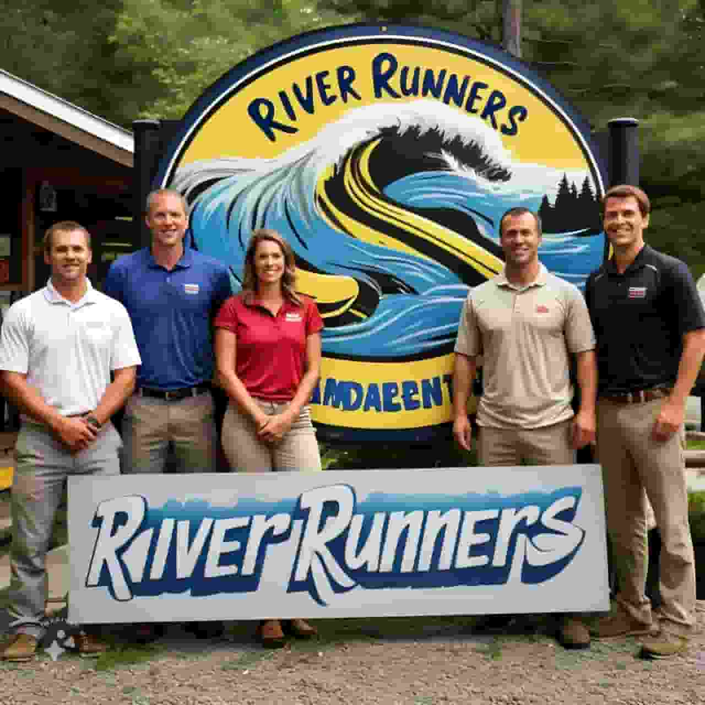

River Runners
Discover the thrill of whitewater rafting on Colorado’s most iconic rivers! Whether you’re a first-time rafter looking for a fun and scenic float or an experienced adventurer seeking the rush of Class V rapids, we have the perfect trip for you.
Our expert guides are here to ensure an unforgettable and safe experience as you navigate through stunning canyons, crystal-clear waters, and exhilarating rapids. From family-friendly excursions to adrenaline-pumping rides, we offer trips on some of the best rafting sections in the country, including Browns Canyon, The Numbers, Royal Gorge, and more.
Join us and experience the beauty and excitement of Colorado’s great outdoors like never before!.

History
River Runners was born out of a deep love for the river and the great outdoors. Founded in 2024 by a group of passionate adventurers and river enthusiasts, our journey began with one simple mission: to share the thrill of whitewater rafting with people from all walks of life while fostering a deep respect for nature.
Starting with just a few rafts and a dream, we began running guided trips on Colorado’s legendary rivers. Over the years, as word spread about the unforgettable experiences we were providing, our company grew. From our early days navigating the scenic stretches of the Arkansas River to now offering expeditions on some of the most challenging and exciting rapids in the region, we’ve remained committed to delivering safe, thrilling, and memorable adventures.

Our team of professional guides, many of whom have been with us since the early years, share an unparalleled love for rafting and have a wealth of knowledge about the rivers we explore. With decades of combined experience, we’ve successfully guided thousands of rafters down rivers like Browns Canyon, The Numbers, Pine Creek, and Royal Gorge.
As we’ve grown, so has our commitment to sustainability and conservation. We’re proud to be stewards of the rivers we navigate and work to protect the natural beauty that surrounds us. From hosting river clean-ups to educating guests about the ecosystems we encounter, we believe in giving back to the environment that gives us so much joy.